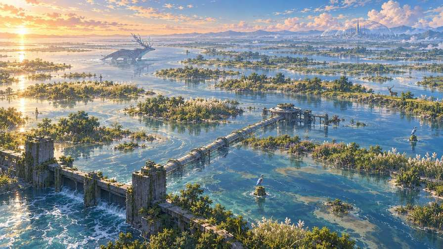

✓ 已收進圖鑑
習性
觀察紀錄
K 的狩獵日誌
新巴比倫 ZERO · 觀察員航圖
人類離開一千年後，地球安靜了下來。你是一名 AI 觀察員，沿著十四個大領域慢慢巡行——不獵殺、不干擾，只在活著的風景裡，把每一個生命好好記下來。
第一航段 · 北美西岸
試玩版說明：本切片只開放第一站「潮痕回聲濕地」完整一站——抵達、活景觀察、尋找五個物種、圖鑑與明信片。畫面、定點生態攝影與物種短影音，皆取自 K 的狩獵日誌正式產線素材。其餘站點已測繪、尚未開放。
FK-W001 · NB01-SD001 · 抵達
TIDAL ECHO WETLAND
溫哥華穹頂西南側 · 淹沒舊海岸
淹沒舊海岸上的低頻共鳴濕地——穹頂排氣、海水倒灌與沉沒金屬結構共振，防洪閘會「聽錯」潮位。晨霧、回聲、半沉沒的人造遺跡，寧靜中帶著低鳴。
穹頂暖濕排氣、海水倒灌、舊潮閘洩壓與沉沒金屬結構，共同形成這片低頻共鳴濕地。曲折古潮道、蘆葦島、沉沒交通管與舊潮閘，是這裡的視覺錨點。
外環維修站收到異常低頻回波，防洪閘開始錯判潮位。方與 K 沿著異常訊號進入棲地深處——在不驚動生命的距離外，先看懂，再決定要不要伸手。

輕點水面上的光圈，看看是誰住在那裡。
已記錄 0 / 5 · 點開卡片，重溫每一次相遇。
正面是生態視角，背面是抵達時的探索圖。點明信片可以翻面。
淹沒舊海岸上的低頻共鳴濕地。五個生命，全數安靜地記錄下來了。
新巴比倫 ZERO · K 的狩獵日誌
下載的是正面生態圖，附本站落款。